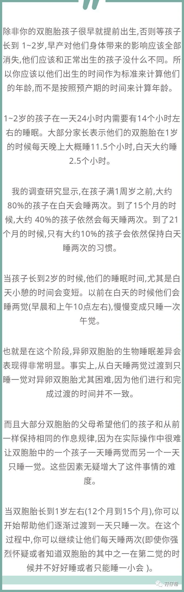
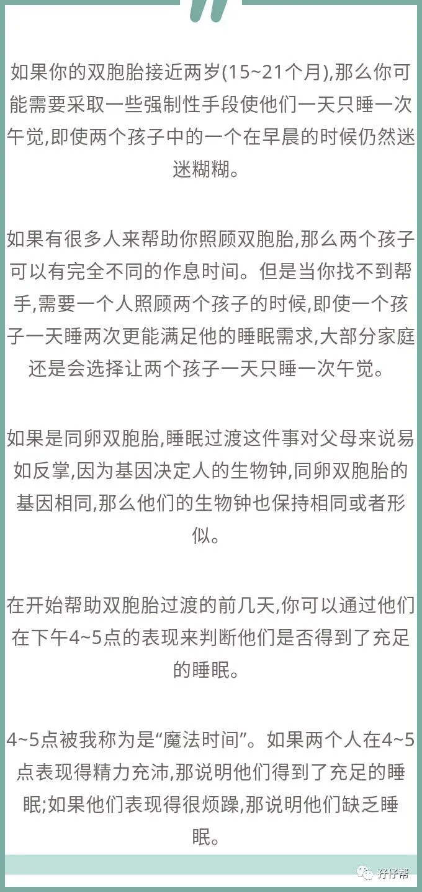
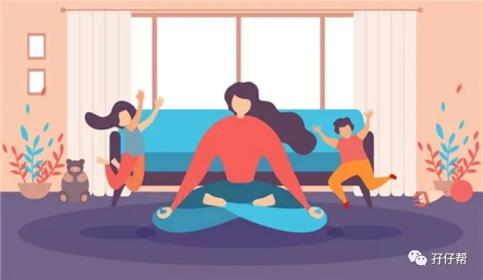
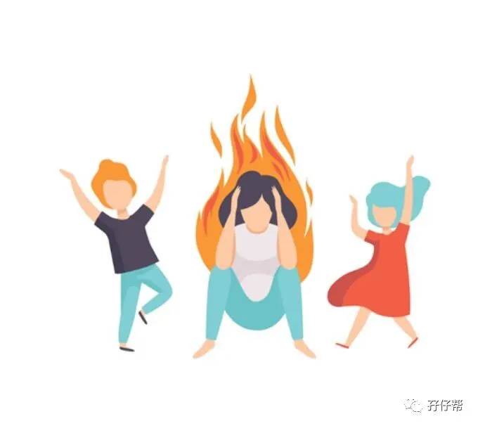

文|圆圈妈，一个文思如尿崩的双胎妈妈
图|来自网络，如有侵权，请联系删除
· 正 · 文 · 来 · 啦 ·
「等孩子1岁了就会好带一点了」
我算是明白为何过来人总是很喜欢对新手妈妈说这句千篇一律的话了。
的确，在某种程度上来说，1岁后的双胞胎孩子，确实让人省心点了！首先体现在睡眠上！
今天的推文主题：
浅谈1--2岁的双胞胎睡眠特点
以下文字节选自《双胞胎睡眠圣经》
第二部分第五章
不同年龄段儿童对睡眠的不同需求
除了以上提到的方法外,还有一个小窍门就是把它们晚上睡觉的时间提前一点。这样做可以补充一些白天缺失的睡眠,保证第二天醒来时候的充沛精力,同时也会自然而然缩短早上的小睡时间。
另一种方法就是一点点推迟早上睡觉的时间,最终把两次的小睡时间重合在一起,使孩子一天只睡一次午觉。
如果你的一个宝宝比较嗜睡,一天仍需要睡两觉,而另一个不需要那么多睡眠,一天睡一次午觉已经足够,而你希望他们俩能保持同步的作息时间,也就是说一天只睡一次午觉,那么这个过渡的过程差不多要持续一个月的时间。
个人拙见
不知从何时起，圆圈连续睡眠时间从刚开始的3小时，延长到5小时，到现在的7小时，甚至9小时...
很多时候，他们总能制造很多惊喜给我们，比如，突然间就秒睡了，或者一觉睡到大清早，中间未曾醒过！
当然，一觉睡到天亮并不是说他们每天都会这样安静地睡个整觉。
有时他们会在应该睡觉的时间矫情一下,有时他们可能会半夜醒来,哭闹一会或者早晨早早就醒来，不哭不闹，两人就躺在那里，咬着手指，吃着脚趾，互相对话…
通常情况下，只要他们不吵着要吃喝，基本上，我们就当没看见，不理会,继续睡…
这样的日子真的好难得啊！至少，再也不用火急火燎地起床换尿布，冲奶粉…而是有机会偷听他们讲只有双胞胎才听得懂的暗语。
但困扰我们的新问题出现了，那就是睡前干扰和日间小睡。
先说说日间小睡
现在他们几乎不再晨间小睡了，取而代之的是饭后的午间小睡，要把两只哄睡，这真是个不小的挑战啊！
主要是他们的日间小睡非常奇葩，睡的时候必须有大人陪同在旁，大人还要配合做各种动作，比如摸一下屁股，拍下后背，捏下手脚，来点小曲儿…而且摸的动作稍微不对劲，还会跟你急，必须摸到爽为止！
我最喜欢哼小曲儿，因为很有效！
不过，睡着的那个人不是娃，而是我自己！
我数次迷迷糊糊地醒来还看到他们在我身上踩来踩去，或者是研究墙角那一只早已归天许久的小蜘蛛…
有时候真想豁出去，都别睡了，给老娘嗨起来！
一想到日间没有睡觉的代价是：傍晚不到六点钟就睡，半夜两三点就起来嗨…
我只能...忍！
一岁半，我们换了个伞车，圆圈很喜欢这个轻便小巧的推车。
于是，每当他们中午不肯睡，或者是求爷爷告奶奶一番，依然不奏效时，我们就会把他们绑在推车上，在客厅里推着转圈圈…
这个办法屡试不爽！
看他们进入深度睡眠后再抱起去床上睡。
我知道这样不好！
但是要我割破老脸哄睡，我真的做不到了，似乎他们越长大我就越随便了，哪怕一些什么鬼点子，馊主意，只要是派上用场，都没关系了。
真的是累到脏器都集体休眠了，哪里还有闲情跟娃娃们风花雪月！
最后说说睡前干扰
许多家长只知道新生儿期的双胞胎睡觉相互干扰很折磨人，其实1岁后的双胞胎睡觉相互干扰的严重程度一点都不逊色。
书上说孩子2岁之前对同伴不会有真正的兴趣，但是搁我这就完全两码事！
也许这就是双胞胎的正确打开方式吧！
不知从何时起，他们就开始互相瞧着对方咪咪笑，或者朝着对方咿咿呀呀地对话。
有时候会互相玩游戏，比如圆圆躲在门边探出头，圈圈会很激动地扑过去，然后两人撞上了也不疼反而笑成一团…
这要是在平时看似很好玩，但若是到了该睡觉的时间还这样玩，就真的让人笑不起来！
每次关灯后，他们就会摸黑滚到对方身上互相蹭，头碰头，脸贴脸，你掐我，我捏你…要么干脆站起来上上下下地跳（当时是一张一米五的床+1米二的床拼凑起来，因为高度不一致，形成阶梯）
有时候真希望他们还是尚在襁褓中的小婴儿，随便我们处置，而不是像现在这样，说了不听，吼了没反应，打了更起劲…
每天晚上哄双胞胎睡觉，都像经历一场恶战一样！从哄娃睡的恶战中幸存下来后，我都会默默地怼下哥俩：“TM…#@￥！终于睡了！”
-END-
一好文推荐一
一加入社群一
一关注孖仔帮一
点击“阅读原文”，直达双胞胎育儿网站www.sgguy.com.
喜欢这个睡眠圣经吗？，请点“在看”



